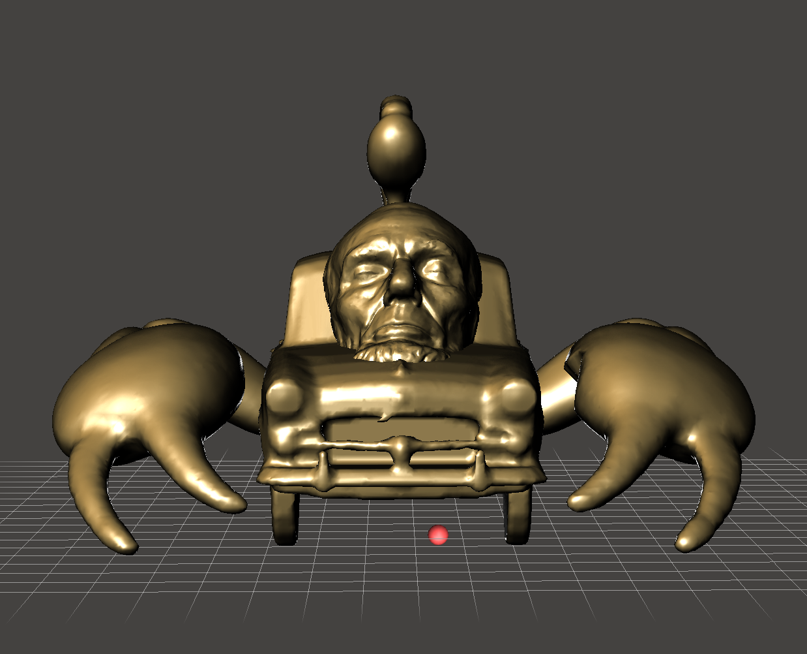
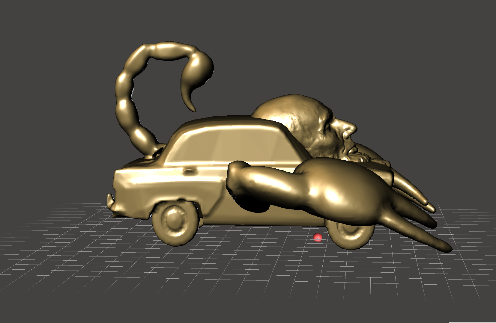
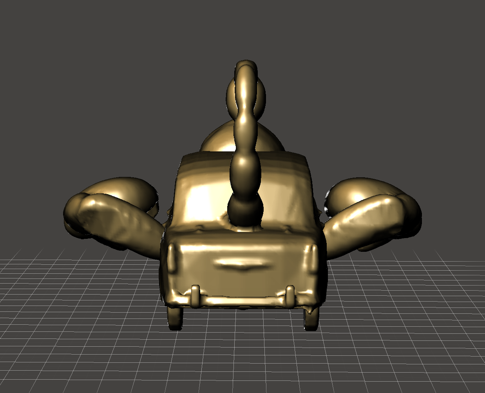

Nature, Histoy and Humanity
3D Modeling
This composition is based on my instinct and unconscious imagination. But when paying attention, I realized that I am using three themes, such as nature, history/ humanity, and industrialization. I was thinking about how the three of these elements depend on each other, and I wondered how they would look together. I made it gold to make it look like a statue/ historical piece. And what you see is the result.


